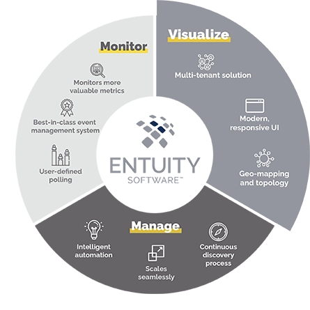

The project aimed to enhance my object-oriented programming skills, which I acquired during my academic training, through another practical example: creating performance monitoring software for my computer.
Using the principles of object-oriented programming, I designed an efficient and modular software architecture.
I identified key components for monitoring the processor, memory, and disk drive.
Implementing the project in suitable programming languages like Java or C++, I created the necessary classes and methods to collect and analyze performance data from my computer.
I utilized libraries and operating system-specific APIs to access processor, memory, and disk drive information.
The user interface was designed to be user-friendly, providing clear and understandable visualization of performance data.
I incorporated graphs, dashboards, and visual indicators to represent performance measurements, facilitating real-time monitoring.
I also implemented mechanisms to detect abnormal performance variations and generate alerts when predefined thresholds were exceeded.
This allowed me to quickly identify potential issues and take appropriate measures to optimize my computer's performance.
This project provided a valuable opportunity to apply my knowledge of object-oriented programming in a practical context.
I deepened my understanding of key concepts such as encapsulation, inheritance, and polymorphism, and their practical application in software development.
In addition to strengthening my programming skills, this project deepened my understanding of computer performance and improved my optimization abilities.
I also developed proficiency in designing and implementing comprehensive software applications, from data collection to user-friendly presentation of results.
Overall, this project was an enriching experience that contributed to my professional development as an object-oriented programmer.
It inspired me to explore new application domains and enhance my programming skills to tackle future challenges.